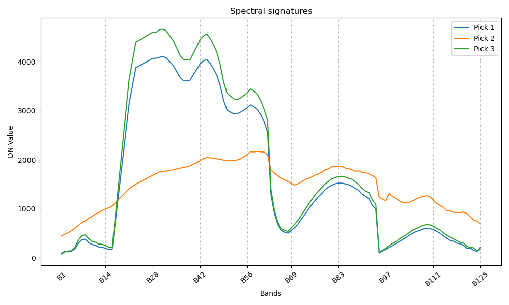
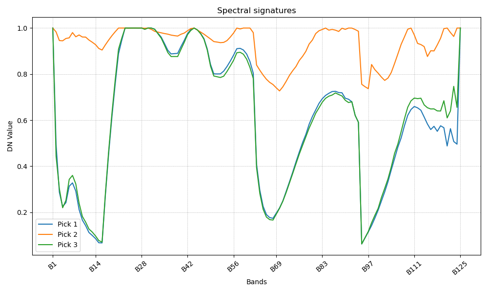

i.spec.convexhull – Applies continuum removal to each band in an imagery group using convex hull analysis and outputs a new imagery group.
imagery, spectral analysis, continuum removal, convex hull
i.spec.convexhull input_group=name output_group=name outputbasename=name [--overwrite] [--help]
i.spec.convexhull processes all raster bands in a GRASS imagery group, performing continuum removal via convex hull analysis on the spectral profile of each pixel. The result is a new group of raster maps, each corresponding to an input band, with the continuum-removed spectra.
This module is useful for spectral preprocessing in remote sensing, particularly for mineral mapping, vegetation analysis, and other applications where normalization of spectral features is required.
i.spec.convexhull input_group=090727_Steinbeissen_rad_geo_atm output_group=convexhull outputbasename=convexhull


Yann Chemin